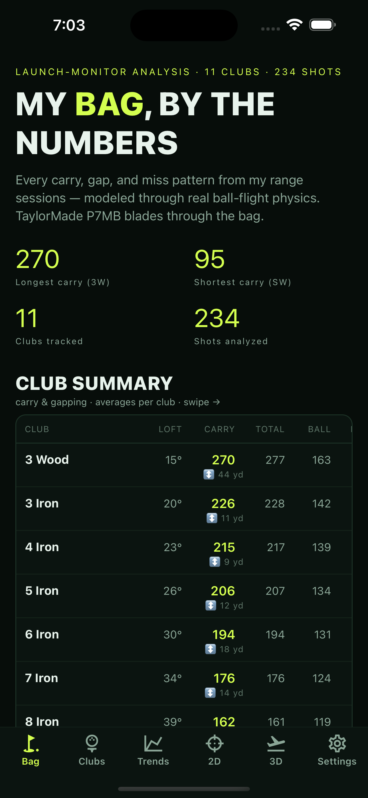
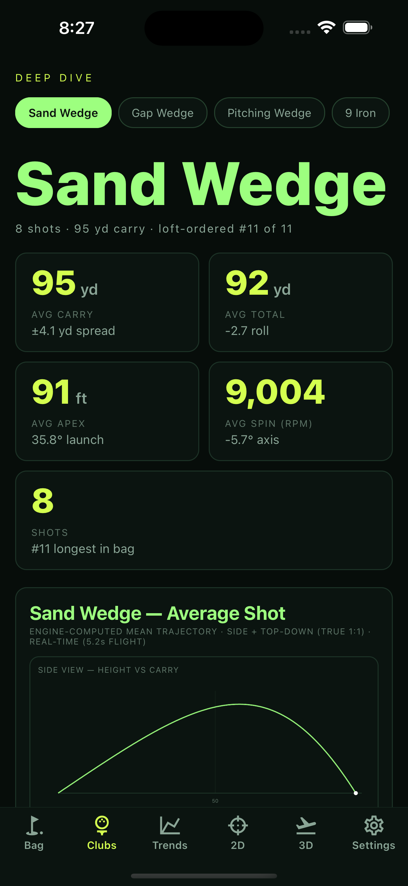
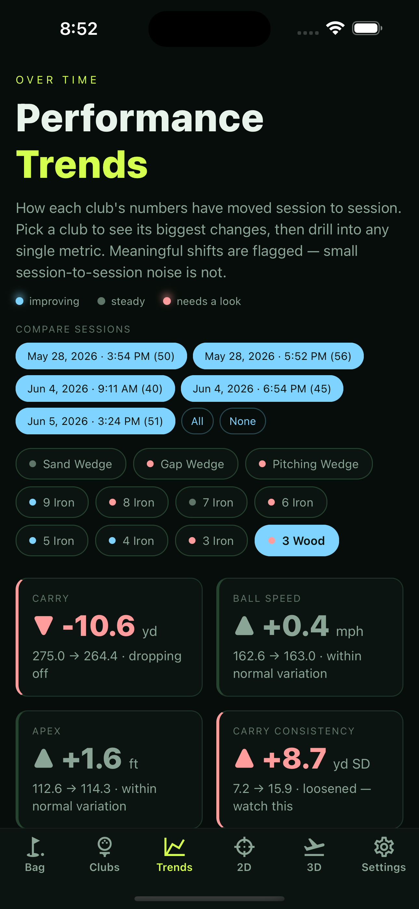
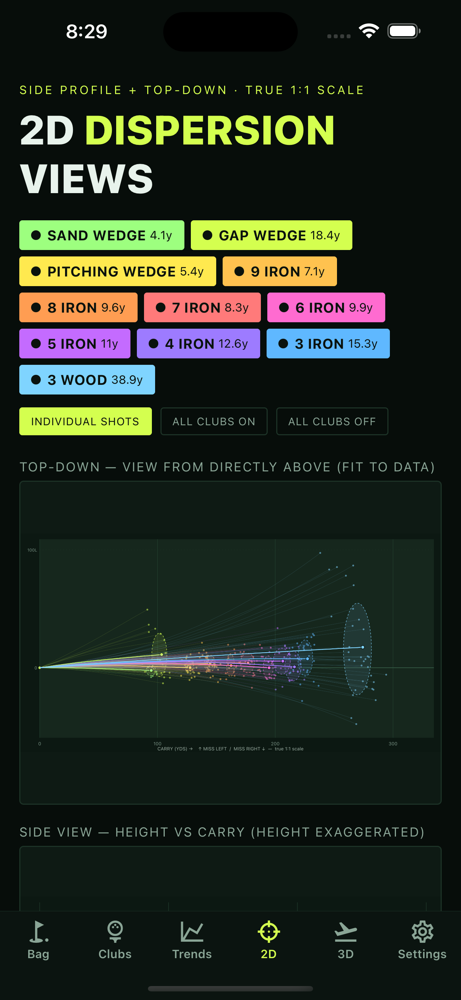
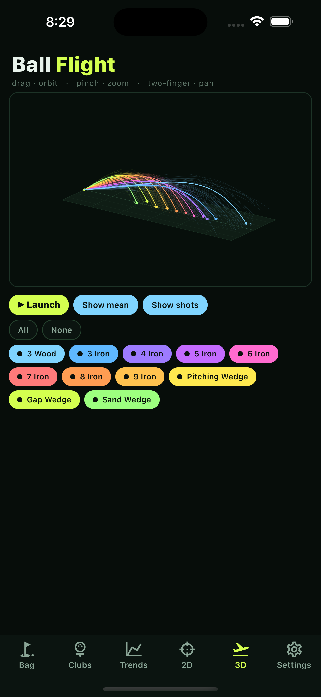

AbsherMetrics turns your launch-monitor sessions into true carry, gapping, dispersion, trends, and 3D ball flight — every shot re-modeled through a real ball-flight physics engine, not the raw number on the screen.
Five views of the same truth — built from your shots, modeled in real time, identical on every device.
Every club's true carry, total, and ball speed at a glance — so you see the gaps and the overlaps in your set instantly.

Average carry, apex, spin, and launch for a single club — plus the engine-computed mean trajectory: the shot you actually hit, drawn at true scale.

Watch how each club moves session to session. Meaningful shifts get flagged; shot-to-shot noise gets filtered out — so you act on signal, not luck.

Top-down and side profiles at true 1:1 scale. Your actual shot cloud and miss tendencies — every club, or one at a time.

Every shot arcs through space in full 3D. Compare clubs side by side, show your mean trajectory, then orbit, pinch, and zoom to any angle.

A launch monitor reports a carry and moves on. AbsherMetrics re-models every shot from its launch conditions — ball speed, launch angle, spin, and spin axis — so the carry you see is consistent, comparable, and yours. The same physics engine powers web, iPhone, and Android identically, so your numbers never change just because you switched screens.
Link up with friends by email and put your bags side by side — without ever exposing a single raw shot.
Send a connection request to a friend's email. Connections are mutual — both sides opt in, either side can remove it anytime.
Overlay a friend's bag on yours and see the deltas club by club — who carries it farther, who gaps tighter.
You share a bag summary and average trajectories only — never your raw shot data. What's yours stays yours.
Three steps. Your data is modeled and synced before you've left the bay.
Finish a range session on your launch monitor and export the session as a CSV file.
Upload the file on the web, or on your phone just Share it straight to AbsherMetrics — it imports as a session automatically.
Every shot runs through the engine and your bag, trends, dispersion, and 3D flight update instantly — synced across all your devices.
Create a free account, bring your launch-monitor data, and find out what every club actually does.